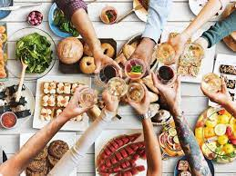
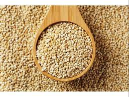
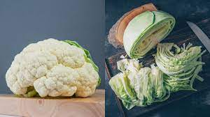
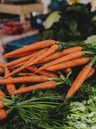
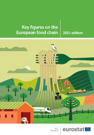

Butter Chicken voted as best chicken dish

5 low-calorie parathas you can eat this winter season
5 low-calorie parathas you can eat this winter season

Water for Food marks global impact in annual report

Quinoa for Breakfast: 5 healthy ways to start your day

Cauliflower vs Cabbage: Which winter vegetable is good for health?

Why have Khatti Gajar this winter?

Key figures on the European food chain - 2023 edition
Butter Chicken voted as best chicken dish
Chicken Dishes In The World" by Taste Atias, an experiential travel online guide for traditional food. Since the dish has its origins in Delhi, the guide labelled the dish belonging to the Capital City. According to the description written on the website, "Probably the best known of all Indian dishes, murgh makhani, internationally referred to as butter chicken, is a staple dish at most Indian restaurants. The dish originated in Delhi during the 1950s, when a man named Kundan Lal Gujral opened his restaurant called Moti Mahal. The restaurant's cooks combined leftover marinade juices with tomatoes and butter, and then stewed the tandoor-cooked chicken in it, without even knowing that they have accidentally stumbled upon one of the most loved dishes ever and a future International delicacy." Indian tikka was described as, "dish consisting of boneless meat, usually chicken, that is cut into smaller pieces and marinated in yogurt and traditional Indian spices such as turmeric, cumin, coriander, cayenne pepper, chill, garlic, and ginger. The meat is roasted over charcoal in a tandoor, the traditional cylindrical clay oven. To remain tender and juicy, the meat is repeatedly brushed with oil or butter. Tikka is typically cooked and served on sizzlers, but the plain varieties are also common. It is often wrongly associated with tandoori chicken, a variety baked and served with the meat left on the bone."
5 Foods and drinks that are silently making you fat
01 Foods and drinks that are silently making you Fat Weight gain can be a result of various factors such as high calorie intake, low physical activity, metabolism, and underlying health conditions. However, chalking out one single reason for weight gain may be difficult, but experts believe a regular intake of certain foods and drinks in more than required quantities can silently lead to weight gain. Here are six types of foods and drinks that, when consumed in excess, may lead to weight gain. Read on to find out… 02 Packed snacks Packaged Many packaged snacks, such as chips, crackers, and cookies, are often high in refined carbohydrates, unhealthy fats, and added sugars, making them calorie-dense. 03 Packaged beverages Consuming aerated and sugary drinks like sodas, energy drinks, and certain fruit juices can add a significant number of calories to the diet without providing any nutritional value. Thus, it is best to avoid such drinks. 04 Fried and fast foods Fried foods, fast food items, and oily snacks contain high levels of unhealthy fats and calories, which may lead to weight gain when consumed frequently. 05 Processed and sugary foods There's no denying that most people love indulging in processed and sugary foods, which have high amounts of added sugars, sodium, additives and preservatives, which have high calorie content and low nutritional value and may lead to obesity.
5 low-calorie parathas you can eat this winter season
Spinach Paratha Spinach is not only a highly nutritious leafy vegetable but also adds great flavour to any dish. Spinach paratha is not only low in fat but also high in fibre and essential vitamins. Ingredients: Whole wheat flour Chopped spinach Some spices Method: Start by kneading the dough with wheat flour, spinach, and a pinch of salt. Roll out the dough into small circles and cook it on a pan with minimal oil. You can also add some grated paneer or tofu for an extra dose of protein. Oats Paratha Oats are a great source of complex carbs and are known for their low-fat content. Oats paratha is not only low in fat but also high in fibre and helps in keeping you feeling full for longer. Ingredients: Oats flour Whole wheat flour Cumin powder Coriander powder Red chilli powder Method: For making this paratha, mix oats flour with whole wheat flour and add some water to make the dough. Then add some spices like cumin powder, coriander powder, and red chilli powder for flavour. Roll out the dough into small circles and cook them on a pan with a little bit of oil. Multigrain Paratha Multigrain flour is a combination of various flours like wheat, barley, soy, corn, etc., making it a perfect option for a healthy and low-fat paratha. This paratha is not only low in fat but also provides a good balance of essential nutrients. Ingredients: Multigrain flour Salt Spices Method: To make this paratha, mix multigrain flour with water and add some salt and spices according to your taste. Roll out the dough and cook it in a pan with minimal oil. You can also add some veggies like grated carrots, capsicum, and onions for added nutrition. Beetroot Paratha Beetroot is known for its numerous health benefits and adding it to your paratha can make it not only delicious but also low in fat. Ingredients: Grated beetroot Whole wheat flour Some spices Method: To make this paratha, grate a medium-sized beetroot and mix it with whole wheat flour, water, and some spices. Knead the dough and roll out small circles, then cook them in a pan with minimal oil. Sweet Potato Paratha Sweet potatoes are not only a winter favourite but also a great source of complex carbs, fibre, and vitamins like A and C. Sweet potato paratha is not only low in fat but also provides essential nutrients required to boost our immunity during the winter season. Ingredients: Boiled sweet potato Whole wheat flour Cumin powder Coriander powder Red chilli powder Method: To make this low-fat paratha, mash boiled sweet potato and mix it with whole wheat flour, water, and spices like cumin powder, coriander powder, and red chilli powder. Knead the dough and roll out small circles, then cook them in a pan with minimal oil.
Water for Food marks global impact in annual report
Water and food security are two of the most pressing issues facing the world today. With a growing population, growing demand for resources and increasing disruptions to water and food systems, it is vital to find sustainable and practical ways to overcome these challenges. The Daugherty Water for Food Global Institute is uniquely positioned to advance water management for greater food security. By leveraging the world-class research at the University of Nebraska; the state's expertise in agricultural and water resource management; and private sector partnerships, the institute is making progress on a more water- and food-secure future. In its recent annual report, the institute demonstrates the impact this effective combination has achieved in the state of Nebraska and around the world. This past year, the institute worked with both local and global partners to: Find sustainable ways to retain crop yields amid an ever-changing climate and water scarcity Explore the best solutions for smallholder farmer irrigation and entrepreneurship in sub-Saharan Africa Reach local communities in Nebraska with research that could affect their health through the Water, Climate and Health Program Develop a new decision-support tool for farmers that is easy to use and provides both long- and short-range guidance for water and nutrient application to crops Assist water managers in meeting local water needs Help the U.S. Department of Energy validate carbon credits of growers for future carbon markets Host nearly 450 in-person attendees at the tenth Water for Food Global Conference, in addition to many others joining virtually. Speakers included Land O'Lakes President and CEO Beth Ford, World Water Council President Loïc Fauchon and International Water Management Institute Director General Mark Smith. Additionally, the institute was re-elected to the World Water Council for another five-year term, furthering the institute's opportunity to ensure that food and water security have a presence on the global stage. “Now well into our second decade as an institute, DWFI's mission is more important than ever,” said Peter G. McCornick, executive director of the institute. “We are dedicated to finding innovative solutions to water and food security by leveraging our collaborative projects, convening partners in a meaningful way and expanding our research and outreach activities. In the past year, we have seen marked progress toward our impact and by continuing to work together, we can create a more sustainable future.”
Quinoa for Breakfast: 5 healthy ways to start your day
Quinoa porridge Who doesn't love a warm bowl of porridge on a cold morning? This classic breakfast dish can easily be made with quinoa instead of oats for a healthier twist. To make quinoa porridge, start by rinsing 1 cup of quinoa and then adding it to a pot with 2 cups of water or milk (dairy or non-dairy). Bring it to a boil then reduce the heat and let it simmer for about 15 minutes until the quinoa is cooked and the liquid has been absorbed. You can add in your favourite toppings like fresh fruits, nuts, and a drizzle of honey or maple syrup for some natural sweetness. This hearty breakfast will keep you full and satisfied until lunchtime. Quinoa breakfast bowl If you are looking for a quick and easy breakfast option, then a quinoa breakfast bowl is the way to go. Simply cook your quinoa according to package instructions and then top it off with your favourite breakfast foods. You can add scrambled eggs, avocado, spinach, tomatoes, and even some bacon if you're feeling indulgent. Quinoa is a great source of protein, making it a perfect base for a filling breakfast bowl. Get creative with your toppings and experiment with different combinations to find your favourite. Quinoa pancakes Who said pancakes can't be healthy? By using quinoa flour instead of regular flour, you can make a stack of delicious and nutritious pancakes. To make quinoa pancakes, start by blending 1 cup of quinoa flour, 1 teaspoon of baking powder, 1 tablespoon of honey, 1 egg, and 1 cup of milk (dairy or non-dairy) in a blender until smooth. Heat a non-stick pan and pour the batter onto the pan. Cook for a few minutes on each side until golden brown. Top off with some fresh berries and a drizzle of honey for a guilt-free breakfast treat. Quinoa breakfast muffins Muffins are a great grab-and-go breakfast option that can be easily made with quinoa. These muffins are not only delicious but also packed with nutrients that will keep you energized throughout the day. To make quinoa breakfast muffins, mix 1 cup of cooked quinoa, 1 mashed banana, 1 egg, 1/4 cup of milk (dairy or non-dairy), and 1 tablespoon of honey in a bowl. Then add in your favourite mix-ins like blueberries, chocolate chips or nuts. Pour the batter into greased muffin tins and bake for about 20 minutes. These muffins are also great for meal prep and can be stored in the freezer for a quick breakfast option on busy mornings. Quinoa fruit parfait If you are looking for a lighter and refreshing breakfast option, then a quinoa fruit parfait is the way to go. This parfait is not only visually appealing but also packed with nutrients from both quinoa and fruits. To make it, start by cooking your quinoa and letting it cool. Then in a jar or glass, layer your cooked quinoa with Greek yoghurt and your choice of fruits such as berries, kiwi, and mangoes. You can also add some honey or maple syrup for some natural sweetness. This parfait is not only a delicious breakfast option but can also be enjoyed as a healthy dessert.
Cauliflower vs Cabbage: Which winter vegetable is good for health?
Cauliflower and Cabbage, both are nutrient-rich vegetables packed with vitamins and folate. Cauliflower contains vitamins C, K, and B6 whereas cabbage has a significant amount of vitamins C and K only. Both are good sources of dietary fibre, aiding in digestive health. Caloric Content: For those mindful of their calorie intake, cauliflower and cabbage are low-calorie options that support weight management. Cauliflower tends to be slightly lower in calories than cabbage, making it an excellent choice for those focusing on weight loss or maintenance. However, both vegetables offer a satisfying volume per serving. Cancer-Fighting Compounds: Cruciferous vegetables, including cauliflower and cabbage, are renowned for their cancer-fighting properties. Sulforaphane, present in both vegetables, has been associated with inhibiting the growth of cancer cells. Regular consumption of cauliflower and cabbage may contribute to a lower risk of certain cancers, making them valuable additions to an anti-cancer diet. Heart Health: Maintaining cardiovascular health is a priority for many, and both cauliflower and cabbage offer benefits in this regard. Cauliflower's potassium content helps regulate blood pressure, while cabbage's fibre and antioxidant components contribute to heart health. Including these vegetables in a heart-healthy diet can be a proactive step toward cardiovascular well-being. Antioxidants Properties: Antioxidants are like superheroes for your body, protecting it from harm caused by stress and inflammation. Cauliflower and cabbage have special antioxidant powers – cauliflower has sulforaphane, and cabbage is packed with anthocyanins. These antioxidants act as shields, fighting off harmful molecules and lowering the chances of getting long-term health problems. Eating cauliflower and cabbage helps keep your body strong and healthy.
Why have Khatti Gajar this winter?
Spice up your meals with a delightful twist! When you’re contemplating what curry or sabzi to prepare, consider whipping up a Khatti Gajar sabzi — a flavourful dish that mimics the taste of a pickle. What’s even better? It’s the perfect time to indulge in winter specialties like carrots. Nutritionist Leema Mahajan shares a cherished family recipe that has been passed down through generations, offering a delicious way to make the most of seasonal ingredients. Khatti Gajar recipe “So simple yet so tasty,” said Mahajan. Ingredients Carrots Mustard oil Green chillies Hing or asafoetida Water Salt Fenugreek seeds (methi dana) Cumin (jeera) Turmeric Red chilli powder Tamarind water Coriander powder Garam masala Black salt Method *Cut the carrots into medium-long sticks and remove the white part too. *In a bowl, take hing (asafoetida) add some water, and keep it aside. *Heat mustard oil in a pan, add methi dana, jeera, chopped carrots, slit green chilli, asafoetida water, salt, red chilli powder, and turmeric. *Mix it well and cover it with a lid. After some time, check with a knife, if the carrots are soft then add tamarind water, coriander powder, garam masala, and black salt. *Cover it with a lid and check after 4-5 minutes. Khatti Gajar is ready to be served. Dr Nirupama Rao, nutritionist, Rejua Energy Centre, Mumbai said that Khatti Gajar, or pickled carrots, are popular in winter due to the abundance of fresh carrots during the season. “The pickling process not only preserves the carrots but also adds a tangy flavour, making it a delightful and nutritious winter snack.”